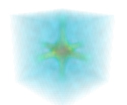
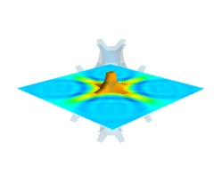

Case studies of some visualizations¶
Visualizing volumetric scalar data¶
There are three main ways of visualizing a 3D scalar field. Given the following field:
import numpy as np
x, y, z = np.ogrid[-10:10:20j, -10:10:20j, -10:10:20j]
s = np.sin(x*y*z)/(x*y*z)
| Iso-Surfaces: | To display iso surfaces of the field, the simplest solution is simply to use the mlab contour3d() function: mlab.contour3d(s)
The problem with this method is that the outer iso-surfaces tend to hide inner ones. As a result, quite often only one iso-surface can be visible. |
|---|---|
| Volume rendering: | |
Volume rendering is an advanced technique in which each voxel is given a partly transparent color. This can be achieved with mlab.pipeline using the scalar_field() source, and the volume module: mlab.pipeline.volume(mlab.pipeline.scalar_field(s))
 For such a visualization, tweaking the opacity transfer function is critical to achieve a good effect. Typically, it can be useful to limit the lower and upper values to the 20 and 80 percentiles of the data, in order to have a reasonable fraction of the volume transparent: mlab.pipeline.volume(mlab.pipeline.scalar_field(s), vmin=0, vmax=0.8)
It is useful to open the module’s dialog (eg through the pipeline interface, or using it’s edit_traits() method) and tweak the color transfer function to render the transparent low-intensity regions of the image. For this module, the LUT as defined in the `Colors and legends` node are not used The limitations of volume rendering is that, while it is often very pretty, it can be difficult to analyze the details of the field with it. |
|
| Cut planes: | While less impressive, cut planes are a very informative way of visualizing the details of a scalar field: mlab.pipeline.image_plane_widget(mlab.pipeline.scalar_field(s),
plane_orientation='x_axes',
slice_index=10,
)
mlab.pipeline.image_plane_widget(mlab.pipeline.scalar_field(s),
plane_orientation='y_axes',
slice_index=10,
)
mlab.outline()
The image plane widget can only be used on regular-spaced data, as created by mlab.pipeline.scalar_field, but it is very fast. It should thus be prefered to the scalar cut plane, when possible. Clicking and dragging the cut plane is an excellent way of exploring the field. |
| A combination of techniques: | |
Finally, it can be interesting to combine cut planes with iso-surfaces and thresholding to give a view of the peak areas using the iso-surfaces, visualize the details of the field with the cut plane, and the global mass with a large iso-surface: src = mlab.pipeline.scalar_field(s)
mlab.pipeline.iso_surface(src, contours=[s.min()+0.1*s.ptp(), ], opacity=0.1)
mlab.pipeline.iso_surface(src, contours=[s.max()-0.1*s.ptp(), ],)
mlab.pipeline.image_plane_widget(src,
plane_orientation='z_axes',
slice_index=10,
)
 In some cases, though not in our example, it might be usable to insert a threshold filter before the cut plane, eg:to remove area with values below ‘s.min()+0.1*s.ptp()’. In this case, the cut plane needs to be implemented with mlab.pipeline.scalar_cut_plane as the data looses its structure after thresholding. |
|


Visualizing a vector field¶
A vector field, i.e., vectors continuously defined in a volume, can be difficult to visualize, as it contains a lot of information. Let us explore different visualizations for the velocity field of a multi-axis convection cell [1], in hydrodynamics, as defined by its components sampled on a grid, u, v, w:
import numpy as np
x, y, z = np.mgrid[0:1:20j, 0:1:20j, 0:1:20j]
u = np.sin(np.pi*x) * np.cos(np.pi*z)
v = -2*np.sin(np.pi*y) * np.cos(2*np.pi*z)
w = np.cos(np.pi*x)*np.sin(np.pi*z) + np.cos(np.pi*y)*np.sin(2*np.pi*z)
| Quiver: | The simplest visualization of a set of vectors, is using the mlab function quiver3d: mlab.quiver3d(u, v, w)
mlab.outline()

The main limitation of this visualization is that it positions an arrow for each sampling point on the grid. As a result the visualization is very busy. |
|---|---|
| Masking vectors: | |
We can use the fact that we are visualizing a vector field, and not just a bunch of vectors, to reduce the amount of arrows displayed. For this we need to build a vector_field source, and apply to it the vectors module, with some masking parameters (here we keep only one point out of 20): src = mlab.pipeline.vector_field(u, v, w)
mlab.pipeline.vectors(src, mask_points=20, scale_factor=3.)

|
|
| A cut plane: | If we are interested in displaying the vectors along a cut, we can use a cut plane. In particular, we can inspect interactively the vector field by moving the cut plane along: clicking on it and dragging it can give a very clear understanding of the vector field: mlab.pipeline.vector_cut_plane(src, mask_points=2, scale_factor=3)
|
| Iso-Surfaces of the magnitude: | |
An important parameter of the vector field is its magnitude. It can be interesting to display iso-surfaces of the normal of the vectors. For this we can create a scalar field from the vector field using the ExtractVectorNorm filter, and use the Iso-Surface module on it. When working interactively, a good understanding of the magnitude of the field can be gained by changing the values of the contours in the object’s property dialog. magnitude = mlab.pipeline.extract_vector_norm(src)
mlab.pipeline.iso_surface(magnitude, contours=[1.9, 0.5])
|
|
| The Flow, or the field lines: | |
For certain vector fields, the line of flow along the field can have an interesting meaning. For instance this can be interpreted as a trajectory in hydrodynamics, or field lines in electro-magnetism. We can display the flow lines originating for a certain seed surface using the streamline module, or the mlab flow() function, which relies on streamline internally: flow = mlab.flow(u, v, w, seed_scale=1,
seed_resolution=5,
integration_direction='both')

|
|
| A combination of techniques: | |
Giving a meaningful visualization of a vector field is a hard task, and one must use all the tools at hand to illustrate his purposes. It is important to choose the message conveyed. No one visualization will tell all about a vector field. Here is an example of a visualization made by combining the different tools above: mlab.figure(fgcolor=(0., 0., 0.), bgcolor=(1, 1, 1))
src = mlab.pipeline.vector_field(u, v, w)
magnitude = mlab.pipeline.extract_vector_norm(src)
# We apply the following modules on the magnitude object, in order to
# be able to display the norm of the vectors, eg as the color.
iso = mlab.pipeline.iso_surface(magnitude, contours=[1.9, ], opacity=0.3)
vec = mlab.pipeline.vectors(magnitude, mask_points=40,
line_width=1,
color=(.8, .8, .8),
scale_factor=4.)
flow = mlab.pipeline.streamline(magnitude, seedtype='plane',
seed_visible=False,
seed_scale=0.5,
seed_resolution=1,
linetype='ribbon',)
vcp = mlab.pipeline.vector_cut_plane(magnitude, mask_points=2,
scale_factor=4,
colormap='jet',
plane_orientation='x_axes')
|
|
Note
Although most of this section has been centered on snippets of code to create visualization objects, it is important to remember that Mayavi is an interactive program, and that the properties of these objects can be modified interactively, as described in Changing object properties interactively. It is often impossible to choose the best parameters for a visualization before hand. Colors, contour values, colormap, view angle, etc... should be chosen interactively. If reproducibiles are required, the chosen values can be added in the original script.
Moreover, the mlab functions expose only a small fraction of the possibilities of the visualization objects. The dialogs expose more of these functionalities, that are entirely controlled by the attributes of the objects returned by the mlab functions. These objects are very rich, as they are built from VTK objects. It can be hard to find the right attribute to modify when exploring them, or in the VTK documentation, thus the easiest way is to modify them interactively using the pipeline view dialog and use the record feature to find out the corresponding lines of code. See Organisation of Mayavi visualizations: the pipeline to understand better the link between the lines of code generated by the record feature and mlab. .
| [1] | Toussaint, V.; Carriere, P. & Raynal, F. A numerical Eulerian approach to mixing by chaotic advection Phys. Fluids, 1995, 7, 2587 |

Table Of Contents
This Page
Google Search
Citing Mayavi
If you publish articles using Mayavi, please cite Mayavi. We need these citations to justify time and resources on the software.